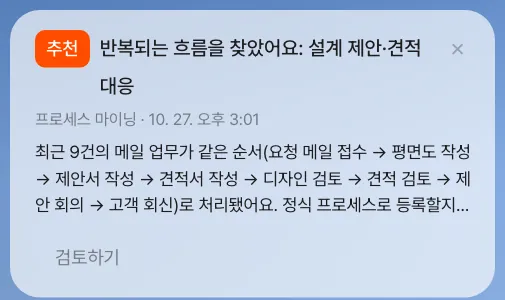
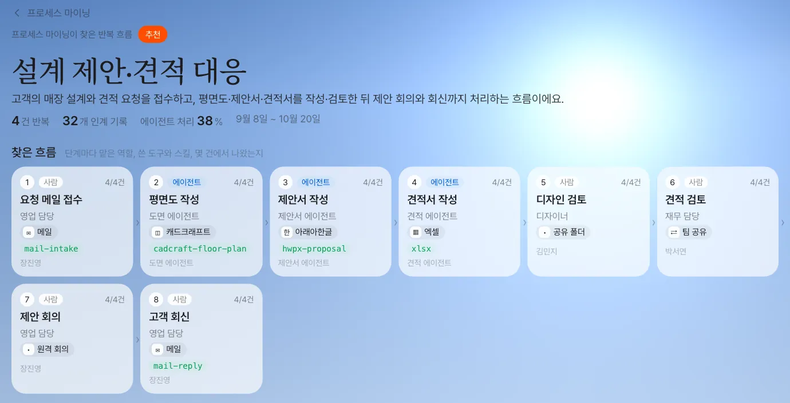
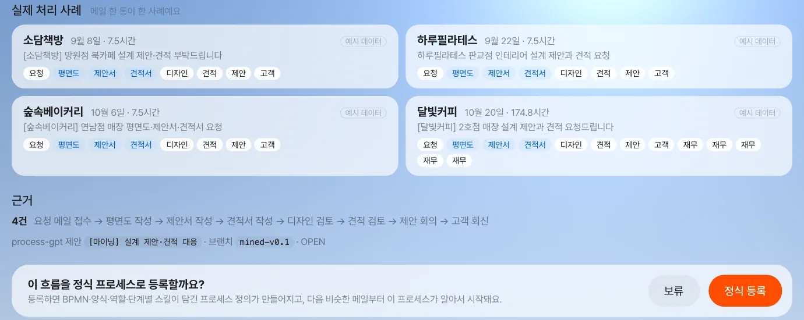
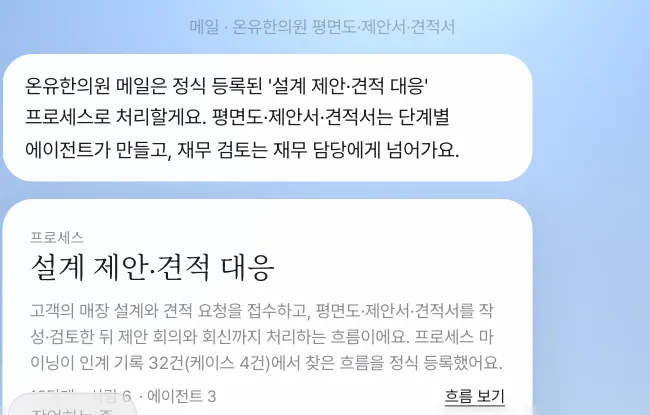
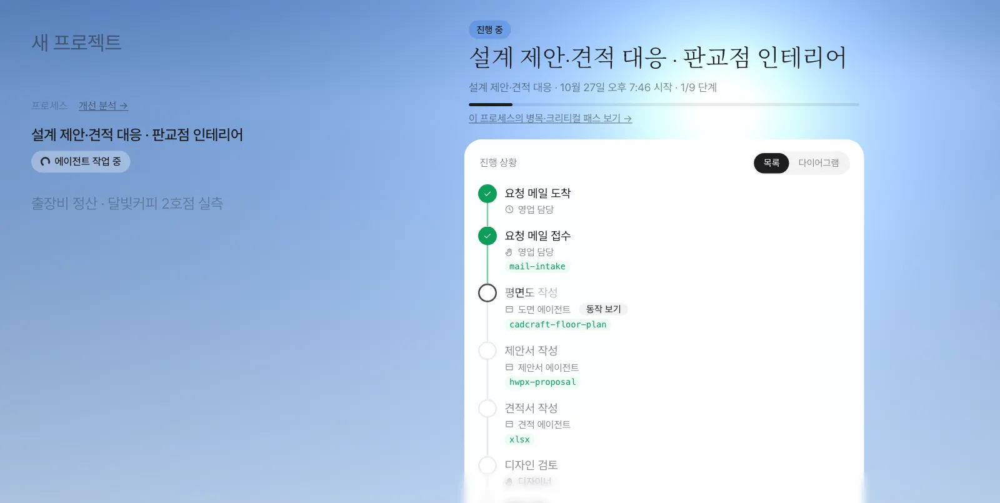
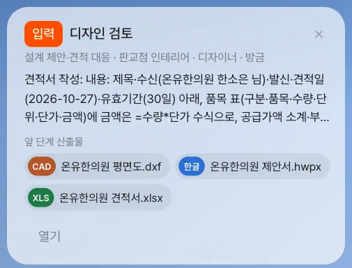

메일 한 통에서 시작해 사람과 에이전트가 주고받은 일은 인계 기록으로 남습니다. 같은 흐름이 몇 번 쌓이면 프로세스 마이닝이 그 패턴을 찾아 관리자에게 추천하고, 관리자가 정식 등록하면 다음 비슷한 메일부터는 그 프로세스가 알아서 시작되어 단계마다 맞는 사람과 에이전트에게 갑니다.
위에서 그리기 vs 아래에서 찾기#
17장에서는 프로세스를 위에서 그렸습니다. 장진영 팀장이 흐름을 말로 설명하고, 비서가 BPMN으로 만들었습니다. 18장의 출장비 정산도 누군가 미리 그려 둔 정의였습니다. 흐름을 이미 알 때 좋은 방법입니다.
그런데 대부분의 일은 처음부터 프로세스로 시작하지 않습니다. 달빛커피 2호점 건도 메일 한 통으로 시작해 9장~16장을 거치며 그때그때 처리했습니다. 이렇게 즉흥적으로 해 온 일의 기록에서 반복되는 흐름을 아래에서 찾는 것이 프로세스 마이닝입니다.
| 대화로 만들기 (17장) | 마이닝 (이 장) | |
|---|---|---|
| 출발점 | 사람이 아는 흐름 | 실제로 일한 기록 |
| 단계 이름 | 말한 대로 | 기록에 남은 대로 |
| 담당 | 역할을 정해 줘야 함 | 그 단계를 실제로 해 온 사람이 기본값 |
| 잘 맞는 경우 | 새 업무, 규정이 정해진 업무 | 이미 손에 익었지만 정리되지 않은 업무 |
무엇이 기록되나 — 인계 기록#
Lite는 메일로 시작한 일을 한 사례(case) 로 묶고, 그 사례 안에서 일이 넘어갈 때마다 인계 기록을 한 줄씩 남깁니다. 형식은 Process GPT의 인계 기록과 같습니다.
| 언제 | 기록되는 단계 | 받는 쪽 |
|---|---|---|
| 고객 메일이 문서를 요청함 | 요청 메일 접수 | 메일 받은 사람 |
| 비서가 초안을 만듦 | 평면도 작성 · 제안서 작성 · 견적서 작성 | 도면·제안서·견적 에이전트 |
| 그 초안을 팀원에게 공유함(14장) | 받는 사람의 역할에 맞춘 검토(재무 담당 → 재무 검토, 디자이너 → 디자인 검토, 그 밖에는 “(역할) 검토”) | 받은 팀원 |
| 고객에게 회신함 | 고객 회신 | 회신한 사람 |
| 회의에서 자료를 띄우거나 일을 맡김(16장) | 회의 자료 공유 · 회의 중 맡긴 작업 | 받은 사람·에이전트 |
인계 기록 한 줄에는 누가 → 누구에게, 무슨 일을, 언제, 어떤 도구(캐드크래프트·한글·엑셀)와 스킬로 했는지가 들어갑니다.
공유 단계의 이름과 사례의 끝
공유 단계의 이름은 받는 사람의 역할(「설정 › 팀·역할」)로 정합니다. 받는 사람에게 역할이 없으면 공유 메모를 보고 정합니다(“도면…”이면 디자인 검토, “견적 금액…”이면 재무 검토). 그래서 디자이너의 검토와 재무 담당의 검토가 다른 단계로 기록됩니다. 고객에게 회신하면 그 사례는 끝나므로, 회신 뒤에 한 공유는 사례에 넣지 않습니다. 마이닝 화면의 「사례는 어떻게 묶이나요?」에 같은 규칙이 적혀 있습니다.
따라 하기 1 — 지난 기록 쌓기#
마이닝은 사례가 4건 이상 쌓여야 패턴을 찾습니다. 이 장의 화면은 장진영 팀이 지난 두 달 동안 처리한 비슷한 요청 네 건의 인계 기록을 연습용 데이터로 넣고 찍었습니다. 실제 회사라면 몇 주 동안 저절로 쌓이는 기록입니다.
| 사례 | 고객 · 요청 |
|---|---|
| 9월 8일 | 소담책방 — 망원점 북카페 설계 제안·견적 |
| 9월 22일 | 하루필라테스 — 판교점 인테리어 설계 제안과 견적 |
| 10월 6일 | 숲속베이커리 — 연남점 평면도·제안서·견적서 |
| 10월 20일 | 달빛커피 — 2호점 매장 설계 제안과 견적 |
네 건 모두 같은 순서로 흘렀습니다.
요청 메일 접수(장진영) → 평면도 작성(도면 에이전트) → 제안서 작성(제안서 에이전트) → 견적서 작성(견적 에이전트)
→ 디자인 검토(김민지) → 견적 검토(박서연) → 제안 회의(장진영) → 고객 회신(장진영)
강사·관리자용 (선택) — 연습용 사례 넣기
서버 폴더를 다룰 수 있는 관리자는 Lite에 들어 있는 연습용 데이터 스크립트로 지난 사례 3건(요청 메일 접수 → 평면도·제안서·견적서 작성 → 재무 검토 → 고객 회신)과 관리자 지정을 넣을 수 있습니다: node server/scripts/seed-mining-demo.mjs <영업 담당 계정 메일> <재무 담당 계정 메일> <관리자 계정 메일>. 여기에 9장에서 직접 처리한 메일 한 건을 더하면 4건이 됩니다. 이 스크립트로 넣은 사례는 단계가 6개이므로, 디자인 검토·견적 검토·제안 회의까지 기록된 이 장의 화면(8단계)과는 흐름이 조금 다릅니다. 스크립트를 쓸 수 없다면 이 장은 화면 사진을 따라 읽으며 흐름을 익히세요.
따라 하기 2 — 마이너가 패턴을 찾는다#
Lite 서버는 1분마다 Process GPT의 프로세스 마이너(반복 흐름을 찾는 계산 서비스)에게 “반복되는 흐름이 있나?”를 묻습니다. 마이너는 AI 모델 없이 정해진 계산으로 찾으므로, 같은 기록이면 늘 같은 답이 나옵니다.
- 사례마다 활동 집합을 만들고, 집합이 60% 이상 겹치는 사례끼리 묶습니다(서로 다른 업무가 한 모델로 뭉치지 않도록).
- 묶음 안에서 절반 이상의 사례에 나온 활동을 핵심 활동으로 보고, 가장 흔한 순서를 주 흐름으로 잡습니다.
- 단계마다 누가 맡았는지(역할·담당자), 에이전트가 맡은 비율, 쓴 도구와 스킬을 셉니다.
사례가 아직 진행 중이면(마지막 단계에 닿지 않았거나 방금 움직였으면) 기다립니다. 진행 중인 사례로 추천하면 뒤 단계가 빠진 흐름이 나오기 때문입니다.
실습에서는 기록을 넣고 1분 안에 이런 추천이 생겼습니다(이름과 요약은 AI 모델이 붙이므로 실행마다 다를 수 있습니다).
| 항목 | 값 |
|---|---|
| 이름 | 설계 제안·견적 대응 |
| 요약 | 고객의 매장 설계와 견적 요청을 접수하고, 평면도·제안서·견적서를 작성·검토한 뒤 제안 회의와 회신까지 처리하는 흐름이에요. |
| 근거 | 사례 4건, 인계 기록 32건 |
| 단계 | 8개, 갈림길 없음(네 건 모두 같은 순서) |
| 역할 | 영업 담당(장진영), 도면·제안서·견적 에이전트, 디자이너(김민지), 재무 담당(박서연) |
| 다음 메일을 알아볼 단서 | 형식 dxf·hwpx·xlsx, 낱말 설계·제안·견적·평면도·인테리어·매장 |
영상으로 보기
프로세스 마이닝 시연 영상에서 메일 업무 기록 → 추천 → 정식 등록 → 다음 메일이 프로세스로 시작되기까지를 한 번에 볼 수 있습니다(시연용 계정과 고객 이름은 이 장과 다릅니다).
따라 하기 3 — 관리자에게 온 추천#
추천은 관리자에게만 갑니다. 관리자의 홈에 “반복되는 흐름을 찾았어요: 설계 제안·견적 대응” 알림 카드가 뜹니다. 카드 설명에는 몇 건이 어떤 순서로 처리됐는지가 적혀 있습니다.
최근 4건의 메일 업무가 같은 순서(요청 메일 접수 → 평면도 작성 → 제안서 작성 → 견적서 작성 → 디자인 검토 → 견적 검토 → 제안 회의 → 고객 회신)로 처리됐어요. 정식 프로세스로 등록할지 정해 주세요.

관리자가 아닌 사람이 마이닝 화면(주소 끝 /mining)을 열면 이렇게 보입니다.
알림 카드나 마이닝 화면의 추천을 열면 다음이 보입니다. 이 장의 관리자 화면은 별도의 관리자 계정으로 찍었습니다.


| 부분 | 내용 |
|---|---|
| 찾은 흐름 | 단계를 차례로 — 사람 단계(역할 담당자에게 알림)와 에이전트 단계(자동 실행)를 구분 |
| 단계 | 단계마다 맡은 역할, 쓴 도구와 스킬, 몇 건에서 나왔는지 |
| 근거 | 실제 처리 사례 — 고객, 메일 제목, 걸린 시간, 단계별 담당. 연습용으로 넣은 사례에는 「예시 데이터」 표시 |
| 결정 | 「정식 등록」 · 「보류」 |
따라 하기 4 — 정식 등록#
관리자가 「정식 등록」을 누르면, 마이너가 그때까지의 사례로 흐름을 한 번 더 도출한 뒤 Process GPT의 프로세스 정의 저장 경로 그대로 저장합니다.
| 등록하면 생기는 것 | 내용 |
|---|---|
| 프로세스 정의 | BPMN, 단계마다 폼, 시작(요청 메일 도착)과 끝(회신 완료) |
| 에이전트 단계 | 평면도·제안서·견적서 작성은 그동안 쓴 스킬(캐드크래프트 평면도, 한글 제안서, 엑셀)을 그대로 붙여 자동 실행 |
| 역할 담당 | 사람 단계는 그동안 그 일을 해 온 팀원이 담당자로 지정됨(영업 담당 → 장진영, 디자이너 → 김민지, 재무 담당 → 박서연) |
| 다음 메일 연결 | 위 표의 단서(형식 2개 이상 일치, 또는 낱말 2개 이상)가 맞는 메일이 오면 이 프로세스로 시작 |
「보류」를 누르면 추천은 접히고, 같은 패턴은 다시 추천하지 않습니다. 사례가 더 쌓여도 결정은 그대로이고 근거만 늘어납니다. 새로 묶인 사례가 이미 있는 추천의 사례와 절반 넘게 겹쳐도 새 추천을 만들지 않고 그 추천의 근거로 더하므로, 같은 흐름의 추천이 두 번 생기지 않습니다.
등록 전에 사례 목록을 확인하세요
정식 등록 때는 그때까지의 사례로 흐름을 한 번 더 도출하므로, 흐름과 관계없는 인계가 섞인 사례가 있으면 정의에 쓸데없는 갈래가 생길 수 있습니다. 고객 회신 뒤의 공유는 이제 사례에 들어가지 않지만, 등록 전에 사례 목록을 한 번 훑어보세요. 도출한 흐름에 동시에 진행하는 단계가 있으면, 등록된 정의의 BPMN에는 병렬 게이트웨이(＋ 표시 마름모)로, 골라서 거치는 갈래는 배타 게이트웨이(× 표시 마름모)로 그려집니다.
따라 하기 5 — 다음 메일은 프로세스로#
정식 등록 뒤 새 설계 요청 메일이 오면, 비서는 임시 초안을 만드는 대신 등록된 프로세스를 시작합니다. 메일을 받은 사람의 채팅에는 이렇게 남습니다.
○○ 메일은 정식 등록된 '설계 제안·견적 대응' 프로세스로 처리할게요. 평면도·제안서·견적서는 단계별 에이전트가 만들고, 재무 검토는 재무 담당에게 넘어가요.
그 아래 프로세스 카드가 붙고, 이후는 18장과 같습니다. 실습에서는 장진영 팀장의 메일함에 새 메일(“[온유한의원] 판교점 인테리어 설계 제안과 견적 요청드립니다”)이 도착하자 1분 안에 정식 프로세스가 시작됐습니다.


세 에이전트 단계가 끝나자(실습에서 약 15분) 디자인 검토가 김민지에게 갔습니다. 김민지의 홈에는 앞 단계 산출물(평면도·한글 제안서·견적서) 칩이 붙은 「입력 · 디자인 검토」 카드가 뜹니다.

확인할 것: 단계마다 담당이 정해져 있습니다. 실습 인스턴스의 할 일은 요청 메일 접수·제안 회의·고객 회신 → 장진영, 평면도·제안서·견적서 작성 → 세 에이전트, 디자인 검토 → 김민지, 견적 검토 → 박서연으로 배정됐습니다.
등록은 회사 전체에 적용됩니다
등록된 프로세스는 누가 받은 메일이든 단서가 맞으면 가져갑니다. 누가 받든 같은 업무는 같은 절차로 처리되게 하려는 동작입니다. 실습 서버를 여럿이 함께 쓴다면, 등록한 뒤에는 다른 사람이 연습하는 설계 요청 메일(9장)도 임시 초안 대신 이 프로세스로 시작된다는 점을 알아 두세요. 등록된 프로세스가 여럿이면 가장 최근에 등록한 것부터 맞춰 봅니다.
다음 장으로#
정식 프로세스가 돌기 시작하면, 이제는 인계 기록 대신 단계마다 시작·끝 시각이 정확히 남는 실행 기록이 쌓입니다. 다음 6부 「프로세스 개선」에서는 이 기록으로 어느 단계에서 일이 쌓이는지(20장), 가치를 만드는 시간과 기다리는 시간이 얼마인지(21장), 전체 기간을 정하는 경로가 무엇인지(22장)를 찾아 고칩니다.
확인 문제
- 사례 네 건 중 한 건이 “견적서 작성 → 고객 회신”만 하고 끝났다면, 이 사례도 같은 패턴에 묶일까요?
- 관리자가 추천을 「보류」한 뒤 같은 흐름의 메일 업무가 열 건 더 쌓이면 어떻게 되나요?
- 정식 등록 뒤 “행사 다과 견적서 보내 주세요(엑셀)”라는 메일이 오면 이 프로세스가 시작될까요?
답
- 묶이지 않습니다. 그 사례의 활동 집합(요청 메일 접수·견적서 작성·고객 회신 정도)은 8단계 집합과 겹치는 비율이 60%에 못 미쳐, 다른 묶음으로 갑니다. 그런 사례가 4건 이상 쌓이면 “견적만 하는 흐름”으로 따로 추천됩니다.
- 같은 패턴은 다시 추천되지 않습니다. 추천의 근거(사례 수)만 늘어나고 결정(보류)은 그대로입니다.
- 시작되지 않습니다. 형식 단서는 xlsx 하나만 맞고(2개 이상 필요), 낱말 단서(설계·제안·견적·평면도·인테리어·매장) 중 “견적” 하나만 맞습니다(2개 이상 필요). 이 메일은 평소처럼 임시 초안으로 처리됩니다.